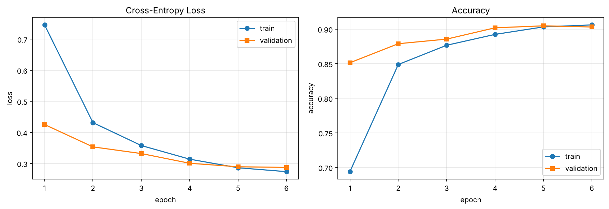
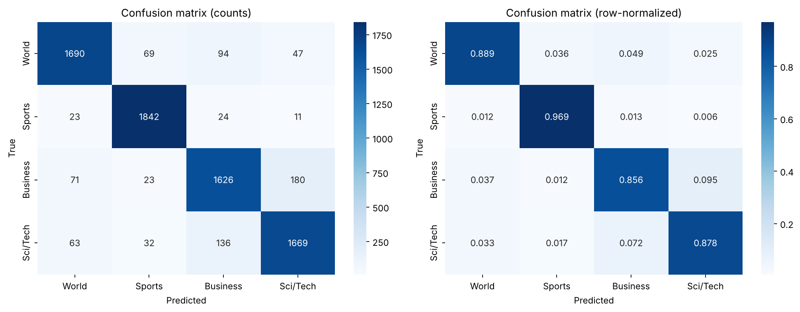

<section id="results" style="background:#F7F5F0;color:#16233A;font-family:'Vazirmatn', Tahoma, sans-serif;text-align:right;padding:128px 128px 160px;display:flex;flex-direction:column;gap:28px">
<p style="font-size:24px;font-weight:700;color:#0E7C7B">&#8235;بخش ۵ · نتایج</p>
<h2 style="font-size:64px;font-weight:700;line-height:1.3">&#8235;منحنی‌های همگرایی و نتایج Test</h2>

<div style="display:flex;flex-direction:row-reverse;gap:32px;align-items:center">

<table style="flex:1;font-size:26px;color:#16233A;background:#FFFFFF;border-radius:12px">
<tr><th style="width:22%">F1</th><th style="width:22%">Recall</th><th style="width:22%">Precision</th><th style="width:34%;text-align:left">Class</th></tr>
<tr><td>0.902</td><td>0.889</td><td>0.915</td><td>World</td></tr>
<tr><td>0.953</td><td>0.969</td><td>0.937</td><td>Sports</td></tr>
<tr><td>0.860</td><td>0.856</td><td>0.865</td><td>Business</td></tr>
<tr><td>0.877</td><td>0.878</td><td>0.875</td><td>Sci/Tech</td></tr>
</table>
</div>
<p style="position:absolute;left:128px;bottom:64px;font-size:24px;color:#8A8F98">Transformer · AG News</p>
<aside>نمودار بالا loss و دقت را در شش اپوک نشان می‌دهد. loss آموزش از ۰٫۷۵ به ۰٫۲۷ و loss اعتبارسنجی از ۰٫۴۳ به ۰٫۲۹ رسیده و بیشترین کاهش در دو اپوک اول است. بهترین دقت اعتبارسنجی ۹۰٫۵ درصد در اپوک پنجم بود و همان مدل ذخیره شد. یک نکته که ممکن است پرسیده شود: در اپوک‌های اول دقت اعتبارسنجی از آموزش بهتر است. دلیلش این است که dropout فقط در آموزش فعال است و معیار آموزش میانگین کل اپوک است، یعنی پیش‌بینی‌های مدلِ هنوز خام را هم شامل می‌شود. در پایان فاصله‌ی دقت آموزش و اعتبارسنجی خیلی کم است، پس بیش‌برازش قابل‌توجهی نداریم. دقت روی تست ۸۹٫۸ درصد است که به اعتبارسنجی خیلی نزدیک است. کلاس ورزش بهترین است با F1 برابر ۰٫۹۵، چون واژگانش خیلی متمایز است. بیشترین خطا بین اقتصاد و علم و فناوری است: ۱۸۰ خبر اقتصادی به اشتباه فناوری و ۱۳۶ خبر فناوری به اشتباه اقتصادی پیش‌بینی شده‌اند. بسیاری از این خبرها درباره‌ی شرکت‌های فناوری‌اند، مثل سود گوگل یا سهام مایکروسافت، و هر دو نوع واژه را دارند؛ حتی برچسب انسانی‌شان هم مبهم است.</aside>
</section>
